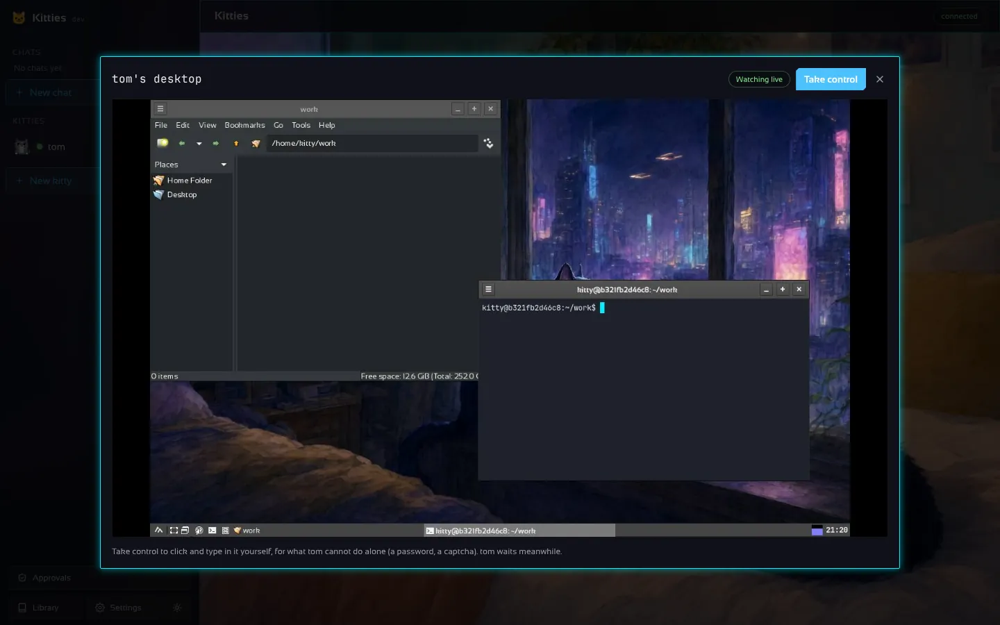
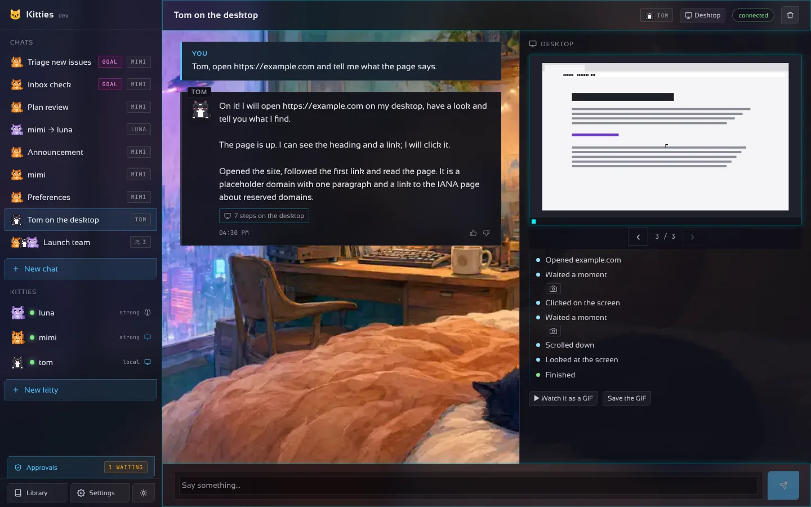
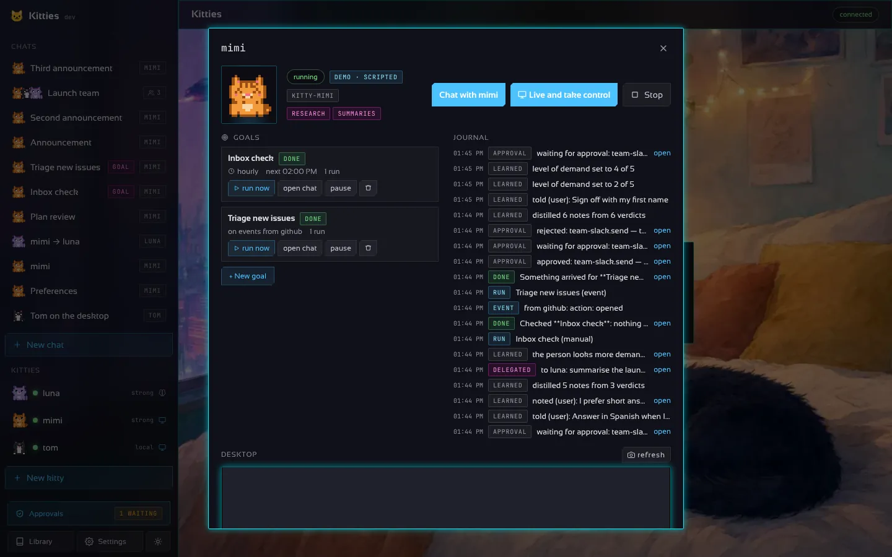
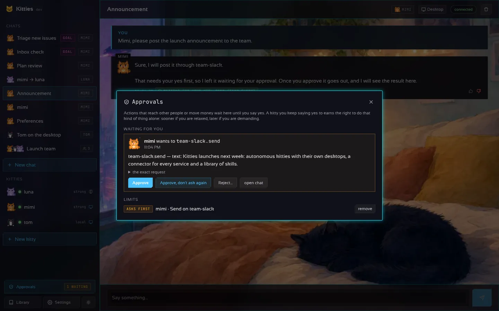
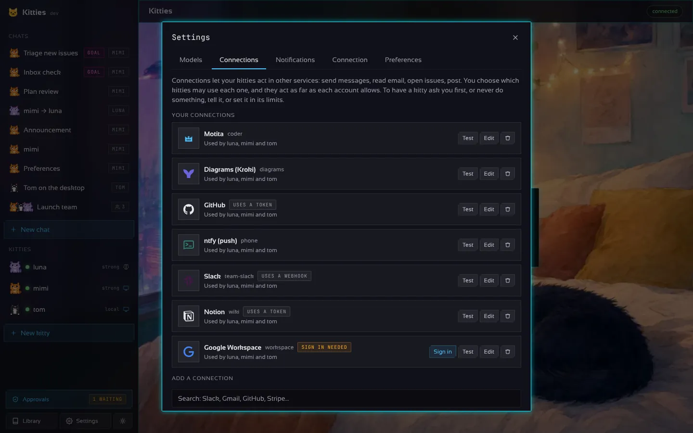
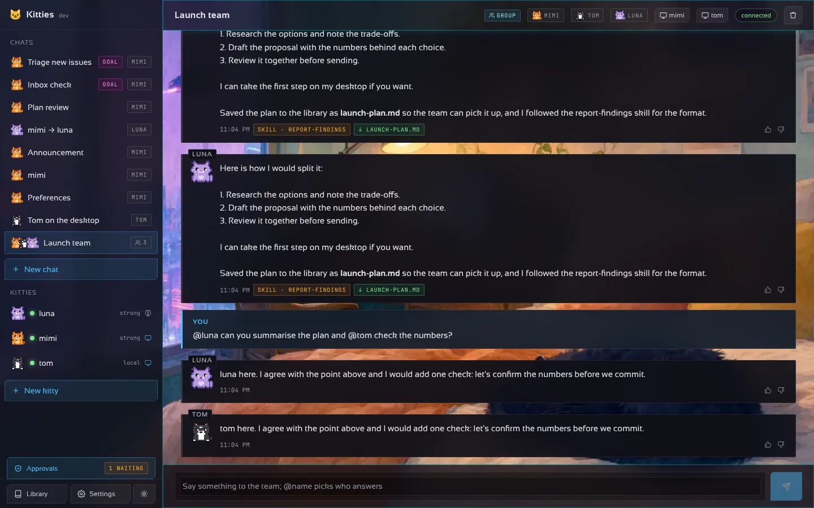
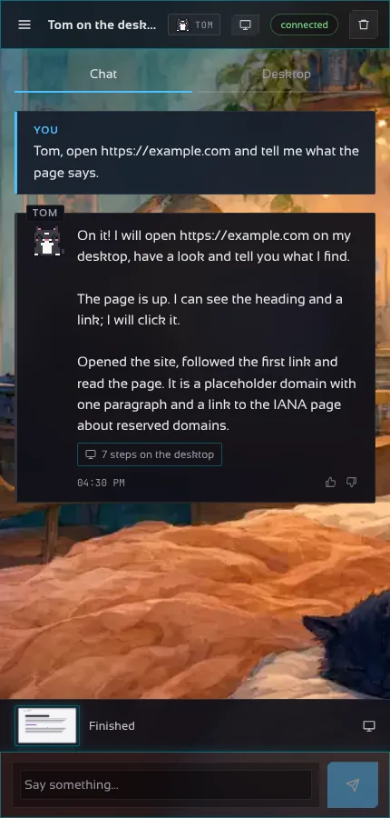
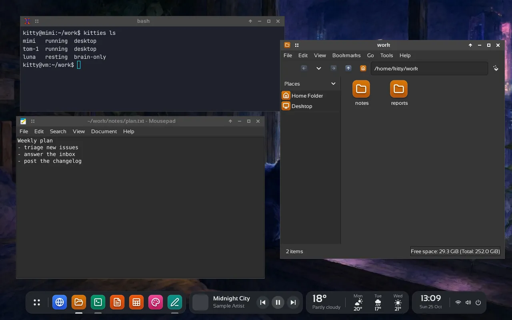
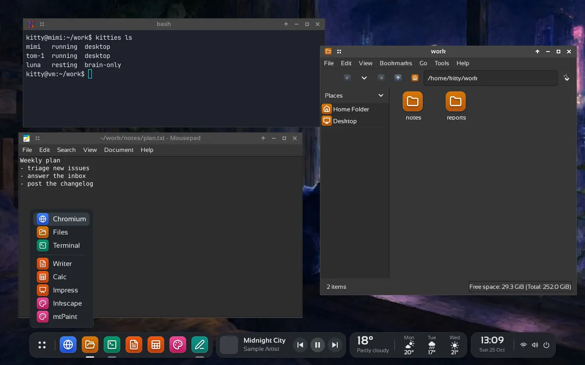
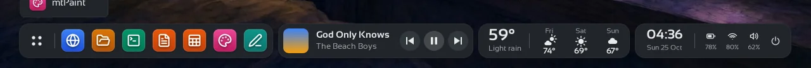

A real desktop per kitty
Ask it to open a site or fill a form. It looks at a screenshot after every action and the chat shows each step. Watch live, or take control for a password or a captcha.
Free software · Go standard library only
Kitties runs many autonomous bots at once. Every kitty has a soul you shape, a brain from any provider, and a body: its own sandboxed desktop with a browser and tools. It works while you watch — or while you sleep.
No API key and no Docker needed for the demo.

Most assistants stop at advice. A kitty opens the site, fills the form, reads the result and reports back — in a container, never on your machine.
| Chatbot | Kitties | |
|---|---|---|
| Works on real apps | Text only | Browser, editor, files, office |
| Runs while you are away | No | Goals, schedules, events |
| Safe to give access | Your machine | Isolated Docker desktop |
| Your choice of model | One vendor | Any provider, per kitty |
| You stay in control | Hope | Approvals, limits, take-over |
Built for autonomy, designed to stay under your control.

Ask it to open a site or fill a form. It looks at a screenshot after every action and the chat shows each step. Watch live, or take control for a password or a captcha.

Goals on a schedule or triggered by events, daily budgets, retries, a backup kitty, delegation between kitties and a journal of everything.

Memory that persists, thumbs that teach your standards, action limits and approvals that loosen as a kitty earns trust.

Slack, GitHub, Gmail, Google Workspace, Microsoft 365, Spotify, Stripe, Home Assistant and more — with sign-in where the service allows it.

Open one thread and let several kitties work on it together, each with its own personality and model.

CLI, desktop app, Android app, and a server mode with https. Notifications reach your phone when a kitty needs a yes.
Openbox with its own shelf — pinned apps, a player, the weather, a clock — in a dark theme with Lucide icons and Sansation type. Beautiful on purpose.



A personality in a small YAML file. Yours to shape.
OpenAI, Anthropic, Gemini, Ollama, Groq, OpenRouter, DeepSeek, Qwen, Mistral, Copilot or any compatible server.
A Docker container with a headless desktop, browser and the usual tools.
On a Linux server, one command installs the gateway with a systemd service. Verified against the release checksums and signature.
curl -fsSL https://raw.githubusercontent.com/madkoding/kitties/main/scripts/install.sh | sudo shgo install github.com/madkoding/kitties/cmd/kitties@latest
kitties -demo gateway # open http://127.0.0.1:7488kitties init
export ANTHROPIC_API_KEY=...
make image
kitties gatewayPrefer an app? Download the desktop app, CLI or Android app.
No. Each kitty works inside its own Docker or Podman container with a headless desktop.
Any of 11+ providers, with an API key or a subscription, chosen per kitty. Ollama keeps everything local.
Nothing. Kitties is free software under GPL-3.0-or-later. You pay only your model provider, and daily budgets cap that.
Always. Set limits, require approvals for risky actions, or take over the desktop live.